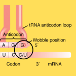

Score: 0 / 0
The Triplet Code
Each amino acid is encoded by a sequence of three nucleotides in the mRNA,
known as a
codon. Multiple
codons can code for the same
amino acid, which is a key feature of
the genetic code.
Wobble base pairing allows for some
flexibility in the third position of the codon, enabling a single tRNA
to recognize multiple codons that code for the same amino acid.

Missense mutations change one amino
acid in the protein sequence, while
silent mutations do not change the amino
acid sequence due to redundancy in the genetic code.
Nonsense mutations introduce a
premature stop codon, leading to a truncated protein.
Dive deeper: AUG is the start codon, coding for methionine.UAA, UAG, and UGA are stop codons that signal termination of translation. The genetic code is nearly universal across all organisms, with some exceptions in mitochondria of the cell and certain protozoa.
Practice Questions
Which best describes codons? Type the letter of the answer: A
a. Codons are sequences of three nucleotides that code for a specific amino acid.
b. Codons are sequences of three amino acids that form a protein.
c. Codons are sequences of three nucleotides that code for a specific protein.
d. Codons are sequences of three amino acids that form a nucleotide.
Which of the following is a stop codon? Type the letter of the answer: C
a. AUG
b. UUU
c. UAA
d. GCU
Which of the following mutations is most likely to result in a nonfunctional protein? Type the letter of the answer: D
a. A missense mutation that changes one amino acid in the protein sequence.
b. A silent mutation that does not change the amino acid sequence.
c. A frameshift mutation that alters the reading frame of the mRNA.
d. A nonsense mutation that introduces a premature stop codon.